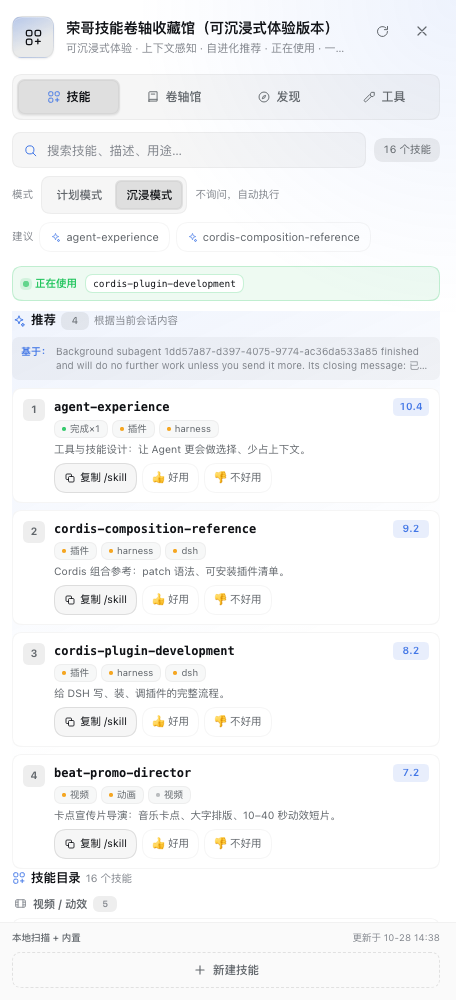

01现在该用哪个？
读取会话最近 8 条用户消息 + 项目根最多 80 个文件名，对技能文本做本地打分，给出 Top 4 和匹配理由。打开面板时每 10 秒静默刷新。
DeepSeek Harness 插件 · v2.1.0 · MIT · 单宿主深做
荣哥技能卷轴收藏馆（Ronge's Adaptive Skill Cockpit）不是最大的技能库， 而是把「该用哪个、为什么、用得好不好」做成会话旁边的一眼可见： 上下文推荐、正在使用、Plan/Immersive、经验记忆与自进化。全本地、可解释、会记住效果。

货架回答「有哪些 skill、怎么装」；驾驶舱回答三个更贴近当下任务的问题。它不替代 Agent 自己的 skill catalog，只把选择变清楚。
读取会话最近 8 条用户消息 + 项目根最多 80 个文件名，对技能文本做本地打分，给出 Top 4 和匹配理由。打开面板时每 10 秒静默刷新。
直接读会话里真实的 skill 工具调用，显示当前 turn 正在使用的技能；空闲时显示最近使用。不是分析推测。
任务完成自动写经验，👍/👎 反馈归因到推荐理由，权重以 10% 步长学习，并保留 10% 探索配额避免越推越窄。
Host 只用 Node 内置模块，Client 是无构建的 plain JS；HTTP 只监听 loopback，不新增端口。
会话内容 + 项目文件名 → Top 4；理由分名称、关键词、类别、经验、手感、探索六类，结构化展示。
从真实 skill 调用读取当前 turn 的技能；子智能体与 fork 的完成提示音自动静音。
计划模式先给方案并问你确认；沉浸模式不问，自动组合 1–3 个 skill 执行，结束后说明用了什么、为什么。
experience.md/json 记录任务、skills、结果、耗时；跨会话成功率、平均耗时、连续失败，支持导出 / 导入。
反馈归因到理由类型，权重有小步长和上下界；默认 10% 概率给冷门技能验证机会。全部本地、可回滚。
shell 执行、curl | bash、动态解码、提示注入、凭据路径、过宽 allowed-tools；给风险等级、命中行、信任与许可证。
skills-lock.json 记来源与哈希；检查更新返回内容 diff，支持全部更新、覆盖前自动备份、一键回滚。
GitHub 公开 SKILL.md 快照：14 类、1–5 评级、搜索与预览后安装。口径透明：不是全网所有 skill。
浏览 MCP 官方 registry（只发现，不自动安装）；中英双语简介、完成提示音、一键新建 Skill。
它们在自己擅长的方向上更强——skills.sh 的生态规模、Claude Code 的宿主整合、各 DSH 插件的目录管理。这里只比较「选 skill、记住效果」这一层。
| 维度 | 本插件 | skills.sh 生态 | Claude Code plugins | DSH 内技能管理插件 |
|---|---|---|---|---|
| 主形态 | DSH 右侧抽屉，单宿主深做 | 跨 agent 市场 + CLI | 官方插件市场 + skills | 目录 / 搜索 / 启停 / 安装 |
| 推荐 + 理由 | 上下文 Top 4 + 六类理由 | 按安装量排行 | 按 description 自动加载 | 以列表、搜索为主 |
| 正在使用 | 真实工具调用，实时 | — | 历史频次 / Last used | 部分有使用记录 |
| Plan / Immersive | skill 编排级双模式 | — | Plan 属权限模式 | — |
| 经验 → 自进化 | 经验 + 反馈归因 + 权重学习 + 探索 | 安装量统计 | 作者侧评估 | 少数有使用记录 |
| 安装前安全 | 本地启发式扫描 + 信任 / 许可证 | 合作方审计 | 市场分层 + 来源校验 | 部分有 trust score |
| 更新 / 回滚 | diff + 备份 + 一键回滚 | lockfile + update | 市场内更新 | 部分有更新检查 |
| 数据 / 遥测 | 全本地，无遥测 | 安装遥测默认开启（可关） | 使用数据不回传作者 | 本地 |
推荐权重不是写死的常数。每次采用 / 好评 / 差评都会记到「产生这条推荐的 top 理由类型」上，然后小步微调；探索配额保证系统仍然愿意试新东西。
复制 /skill 记为采用，👍 / 👎 记为质量反馈；经验条目的反馈也会归因到该技能上次推荐的理由类型。
每累计 10 条反馈评估一次：某类理由命中率 ≥ 70% 时权重 ×1.1，≤ 40% 时 ×0.9（样本 ≥ 8、步长 10%、有上下界）。
默认 10% 的推荐位留给平时很少被推荐的技能；长期没人采用会自动调低，采用率高会自动调高（0–30%）。全程本地、无模型调用，历史可回滚 / 重置。
反馈 adopt / good / bad ──归因──► 权重微调 ──► 排序变化 ──► 经验记忆与 10% 探索持续采样 ──► 回到反馈
在任意 DeepSeek Harness 会话里让 Agent 执行；安装是 profile 级的，所有会话生效。需要 danger-full-access 或审批。
plugin_manager install_bundle target=git+https://github.com/bugtakue/dsh-ronge-adaptive-skill-archive.git#v2.1.0
plugin_manager install_bundle target=dsh-ronge-adaptive-skill-archive@2.1.0
plugin_manager install_bundle target="/absolute/path/to/dsh-ronge-adaptive-skill-archive"
① 打开任意会话 → 右上角「技能」→ 右侧抽屉。
② 顶部切换「计划模式 / 沉浸模式」。
③ 底部「新建技能」写入 ~/.dsh/skills/，下一会话可见。
从 v1.x 升级：先移除旧 bundle，再装 v2.1.0；旧数据目录会自动复制并保留。
这是一个本地优先的个人工具，不是托管服务。
推荐、安全扫描、自进化全部在本机完成，不调外部模型、不上传、无遥测。只读会话最近内容和项目文件名。
安装前安全检查是启发式静态扫描，无法覆盖全部攻击面；安装前仍应自己预览全文。信任等级与许可证只是辅助信号。
只从 raw.githubusercontent.com 拉 SKILL.md（≤ 256 KiB），不自动拉脚本、不覆盖已有 skill；MCP 目录只发现不安装；名称白名单拒绝路径穿越。